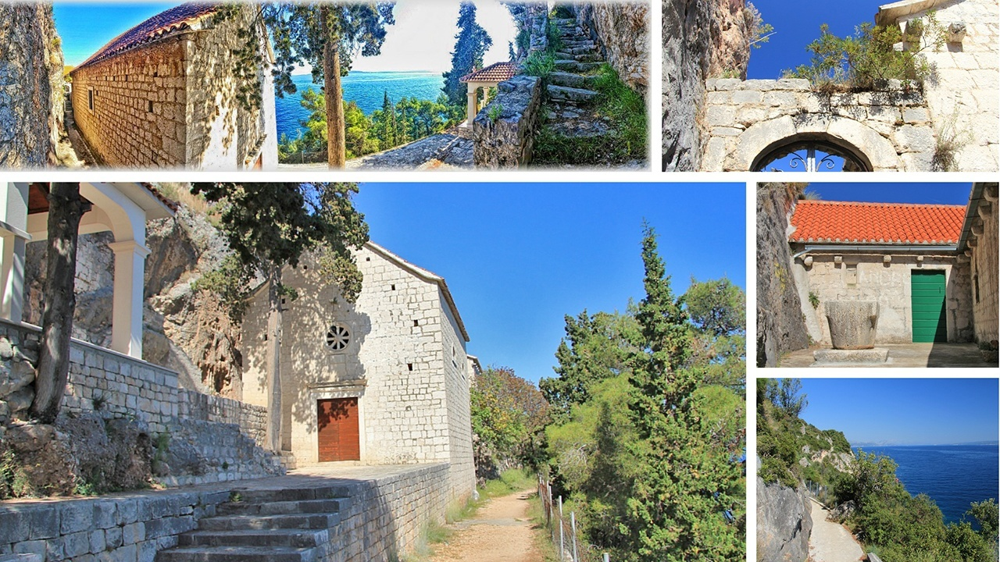
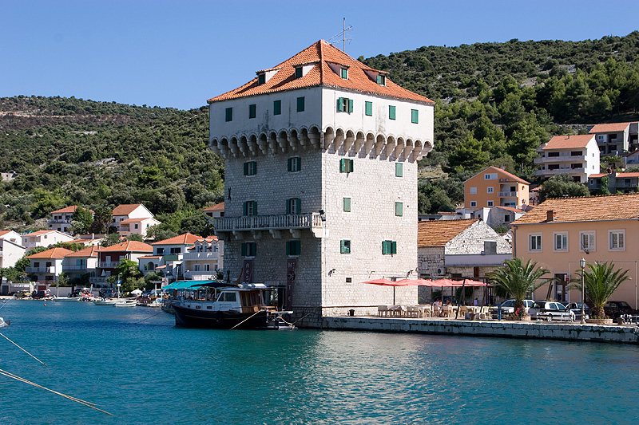
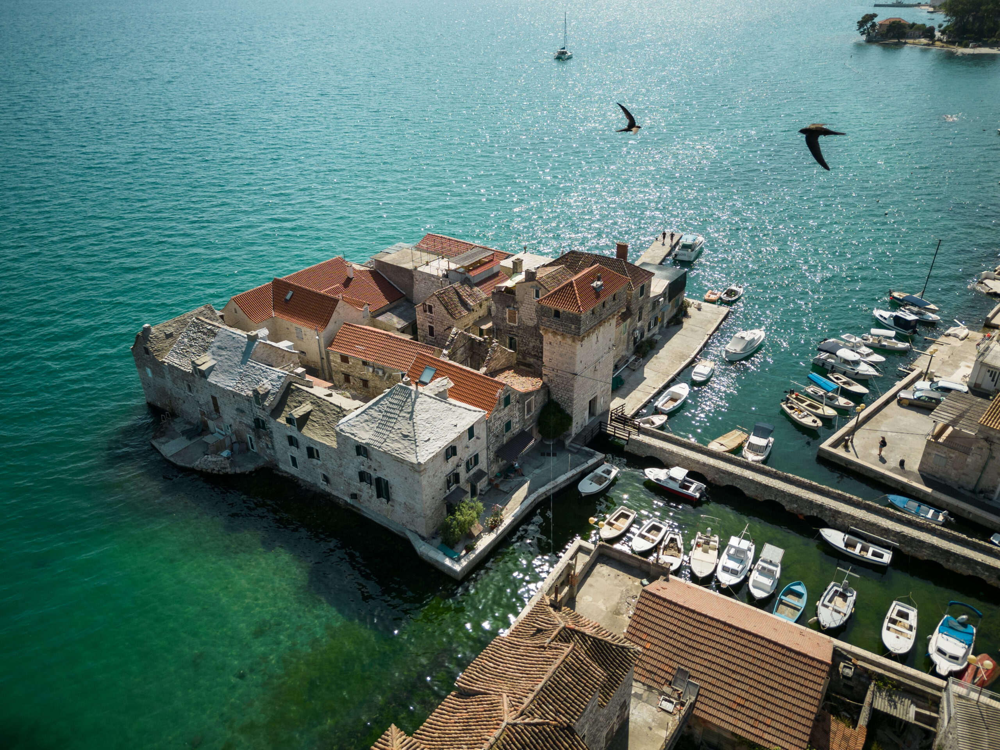
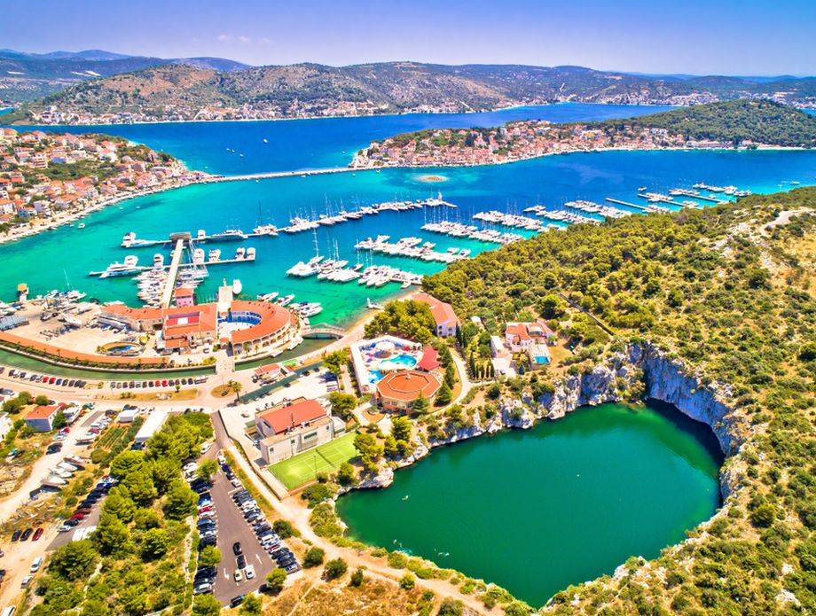
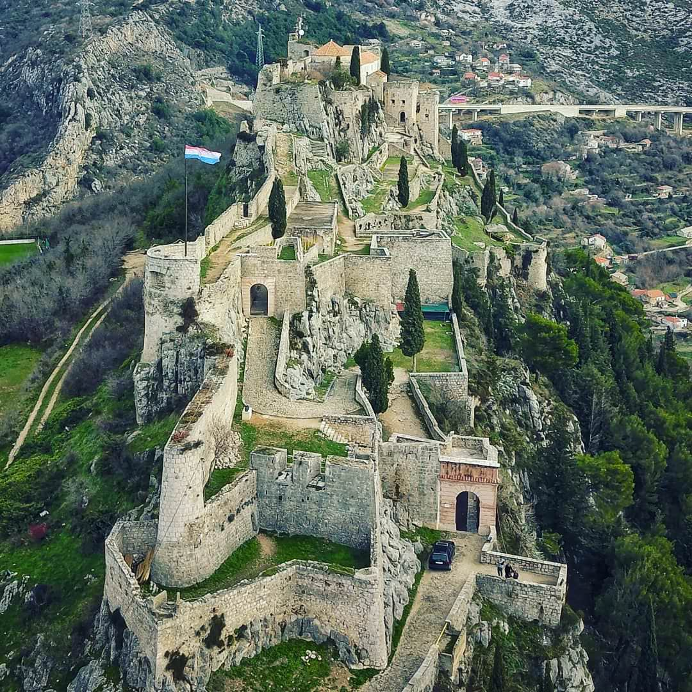

50cc
Okrug Beach
The most popular beach near Trogir — a long pebble beach on Čiovo island with crystal-clear water, beach bars, and stunning views across the channel. Just 10 minutes by scooter.
The most popular beach near Trogir — a long pebble beach on Čiovo island with crystal-clear water, beach bars, and stunning views across the channel. Just 10 minutes by scooter.

A beloved local beach bar on Čiovo with a relaxed vibe, cold drinks, and a beautiful spot to swim. A favourite among locals — ask us for the exact route.

A beautiful 15th-century chapel perched above the sea in Slatine village. Stunning views, peaceful atmosphere, and a great photo stop on your Čiovo loop.

A charming coastal town with a medieval tower, a pretty harbour, and excellent seafood restaurants. A lovely 20-minute coastal ride from Trogir heading northwest.

Seven medieval castles line the bay between Trogir and Split. Kaštilac is the most photogenic — a fortress built on a tiny island connected to shore. Ride the scenic coastal road to get there.

Rogoznica is a beautiful peninsula town with a unique natural phenomenon — Zmajevo Oko (Dragon's Eye), a saltwater lake connected to the sea. A scenic 30-minute coastal ride south of Trogir.

Croatia's second city and a UNESCO World Heritage site. Ride the coastal road to Split, walk through the 1,700-year-old palace, stroll the Riva promenade, and swim at Bačvice beach.

A dramatic medieval fortress perched on a cliff above Split — famous as a filming location for Game of Thrones. Combine it with a Split day trip for an unforgettable full day out.

A striking hilltop monument overlooking the sea near Primošten. The ride south along the Adriatic coast is one of the most scenic stretches in all of Dalmatia — worth every kilometre.
Full itineraries with stops, distances and tips — ready to ride.

Cross the Trogir bridge onto Čiovo island and ride the winding coastal road through pine forests. Each beach is more beautiful than the last — from lively Okrug Gornji to the serene cove at Mavarstica.

Ride the scenic coastal road through all seven Kaštela towns, stop at a local winery, and explore the medieval Kaštilac fortress on its tiny island. End with fresh seafood at a waterfront konoba.

Ride the coastal road to Croatia's second city. Explore Diocletian's 1,700-year-old palace, walk the Riva promenade, hike Marjan Hill for panoramic views, and swim at Bačvice beach before riding back at sunset.

The ultimate Dalmatian ride. Cruise south past Split to the dramatic town of Omiš, where the Cetina river cuts through a stunning canyon before meeting the sea. Visit the medieval Starigrad fortress for breathtaking views.

A short evening ride along the coast to catch the best sunset views over the Adriatic. Stop at a clifftop café, watch the sun dip behind the islands, and ride back through the warm evening air. Magical.

New to scooters? This gentle loop takes you through Trogir's UNESCO old town, along the Seget Donji promenade, and past the Pantana nature area. Perfect for getting comfortable on two wheels.
Call us and we'll recommend the perfect scooter for your route — and share our best local tips for free.